2026 07+08 / ISSUE 03
청년 ON AIR
"Light-up 빛나는 청년"
서울지방고용노동청 · 서울 고용복지+센터
"AI와 함께하는 새로운 직업의 세계"
“청년들의 진짜 고민에서 시작, 해법 찾기 나서다!”
'청년 와우(wow)+AI 스쿨'을 기획한 배경은?
채용 시장은 빠르게 변화하고, 기업은 AI역량을 요구합니다. 청년들은 궁금합니다.
"그래서 나는 뭘 해야하지?", "막막하다...", "지금까지 쌓아온 경험, 여전히 쓸모 있을까?", "내일은 괜찮을까?"
서울고용복지+센터가 딱 그 지점에서 고민을 시작하게 되었고, "청년들이 AI시대 취업준비 과정에서 겪는 현실적인 고민들"에 대해 기업 현직자와 업계 전문가로부터 그 답을 찾기 위해 이 프로그램을 시작했습니다.
참여한 청년들은 단순히 AI툴 사용법을 배우는 것에 그치지 않고, AI로 어떤 문제를 해결해 봤는지에 대한 경험을 쌓고, 그 과정에서 실패한 경험도 당당히 이야기 할 수 있어야 한다는 것을 알게 되는 시간이었습니다.
'26년 6월, 3회에 걸쳐 펼쳐진 현직자와 전문가의 특강, 그 현장 속으로 함께 들어가 볼까요?
"AI 기업의 직무 및 채용"
노타AI 김민용 이사
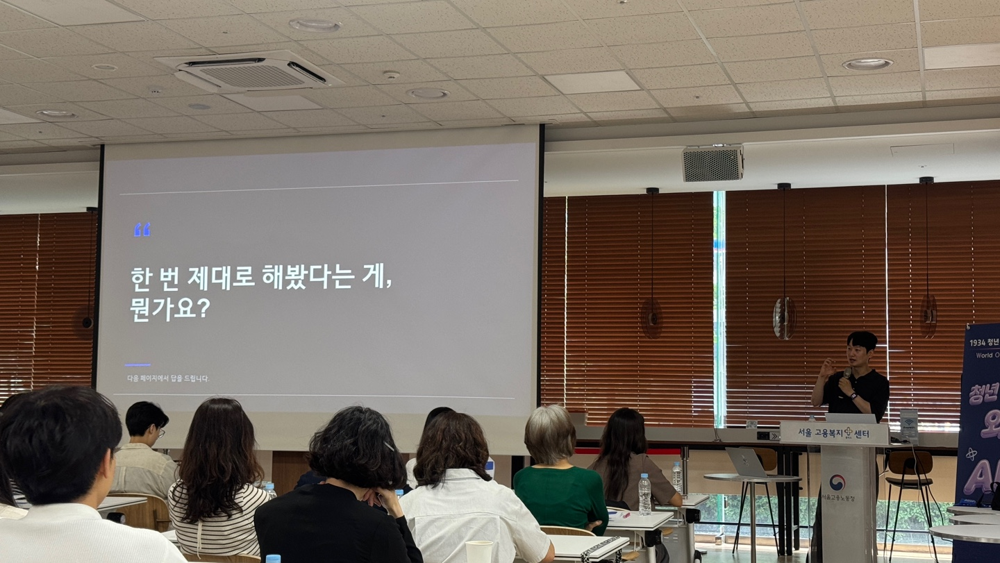
1교시를 시작한 노타AI의 김민용 이사.
주제는 'AI 시대 AI 기업의 직무와 채용 전략'이었습니다.
"AI가 내 일자리를 빼앗는 게 아니라, AI를 다룰 줄 아는 사람이 그 자리를 채울 뿐입니다."
김민용 이사는 채용 시장에서의 질문은 이미 달라졌다고 짚었습니다. "AI 쓸 줄 아세요?"가 아니라 "AI로 어떤 문제를 해결해 봤나요?", 노타AI 채용 면접에서도 묻는 질문이라고 했습니다. 무엇을, 어떻게, 왜 만들었는지. 그리고 그 답변에서 가장 눈여겨보는 건 실패 경험이라고 했습니다. 잘 된 것보다 잘못되었을 때 어떻게 다시 시도했는지가 지원자의 역량을 더 확실히 보여줄 수 있다는 것입니다. 아울러, 직무의 변화를 짚으며, AI Agent의 등장으로 존재하지 않던 직무들이 새롭게 생겨나고 있고, 있던 직무도 AI를 어떻게 다루느냐에 따라 전혀 다른 일이 되고 있다고 강조했습니다.
"복잡하게 생각하지 마세요. AI is 결국, 내 일을 도와주는 도구입니다."
김 이사의 마지막 한 마디였습니다.
'AI (Agent) Engineer'가 궁금해?
AI Agent를 직접 설계하고 여러 Agent를 연결·운영하는 역할. 쉽게 말하면 AI들의 팀장입니다. 실리콘밸리에서는 채용 공고가 전년 대비 143% 급증할 만큼 지금 가장 핫한 직무! 개발자 출신이 많지만, 프롬프트 엔지니어에서 자연스럽게 진화하는 사례도 늘고 있다고 합니다.
"꼭 필요한 디지털 리터러시"
(주)내일시스템 박재만 대표
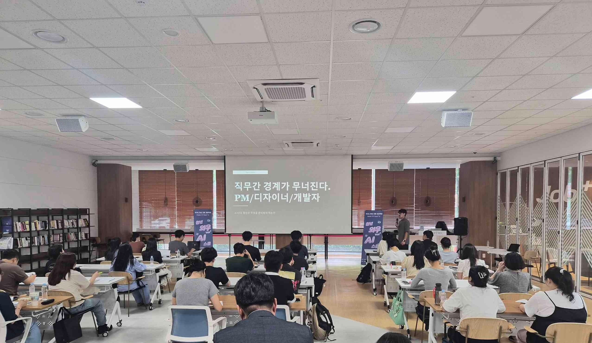
2교시의 주제는 (주)내일시스템 박재만 대표의 '꼭 필요한 디지털 리터러시'였습니다.
박재만 대표는 먼저 흔한 오해 하나를 짚었습니다. AI가 사무직 전체를 대체할 것이라는 공포. 하지만 현실은 다릅니다. 복합적인 실무를 AI가 완벽히 해내는 단계는 아직 어렵고, 오히려 AI가 잘 일할 수 있도록 구조를 짜고 결과를 검증하는 일, 이것이 지금 사람에게 중요한 역할이라고 했습니다. AI시대 직무 간 경계는 점점 모호해지고 있지만, 문제를 발견하고 어떻게 해결할지 결정하는 건 사람의 몫이라는 겁니다.
그가 정의한 진짜 리터러시는 단순히 AI툴을 잘 쓰는 것이 아니었습니다. 박 대표는 "AI가 버튼 하나로 '딸깍'해서 그냥 만들어내는 결과물에 의존하기보다, AI가 할 수 없는 영역, 인간만이 할 수 있는 것이 무엇인지 고민해보라"고 조언했습니다.
"여러분의 경쟁자는 AI가 아닙니다. 오늘 배우기를 멈추는 사람입니다."
박 대표의 마지막 한 마디였습니다.
"취업의 완벽한 비서"
서울시립대학교 한정숙 컨설턴트
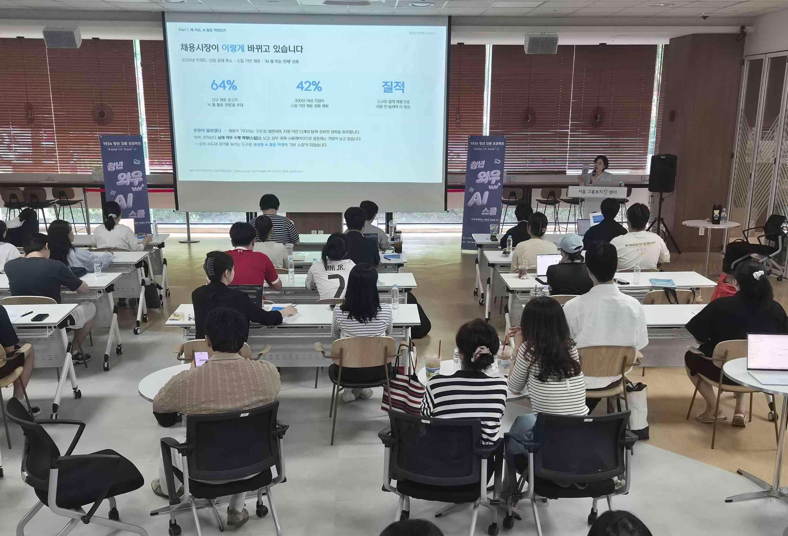
3교시 강단에 오른 서울시립대의 한정숙 컨설턴트. 주제는 '취업의 완벽한 비서'였습니다. AI를 단순히 자소서 대필 도구로 쓰는 것에서 벗어나, 진로 설계부터 기업 분석, 실전 면접까지 취업 준비 전 과정을 함께 뛰는 '페이스메이커'로 활용해야 한다는 메시지를 던졌습니다. 한정숙 강사가 강조한 AI 활용의 핵심은 결국 '어떻게 질문하느냐'에서 시작합니다. 맥락, 역할, 형식을 구체적으로 질문할수록 돌아오는 결과물의 수준이 달라지는 만큼, 프롬프트 능력 자체가 곧 실력이라는 것입니다. 단, AI가 써준 글을 그대로 쓰는 건 금물! 한정숙 강사는 자소서를 쓸 때도 사실 확인과 개인정보·저작권 검증은 기본이고, 나만의 언어와 경험으로 마무리해야 비로소 진짜 '내 자소서'가 완성된다고 강조하며 강의를 마쳤습니다.
"AI는 나를 도와주는 비서일 뿐, 완성은 언제나 사람의 몫입니다."
현대오토에버 편 현장 Zoom-In
취업준비콘서트에 지난 7. 1.(수) 현대자동차그룹의 IT 전문 기업, 현대오토에버의 현직자가 찾아왔습니다. 현직자가 전하는 직무 이야기와 합격 팁을 듣기 위해 80여명의 청년들이 모인 이날의 현장 분위기와 현직자가 전한 중요한 이야기들을 콕 찝어 전해 드립니다.
*현대오토에버: 2026.6.23.(화)-7.13.(월) 신입사원 채용 절차 진행

1 "우대 사항에 겁먹지 마세요, 여러분은 신입입니다"
채용 공고 속 화려한 기술 스펙과 우대 사항을 보면 지원 전부터 겁이 나기 마련입니다. 이에 현직자는 명쾌하게 답했습니다.
"공고의 '필수 역량'은 회사가 원하는 최소 기준일 뿐입니다. '우대 사항'은 말 그대로 우대이고요. 경력직 채용이었다면 그중 상당수가 필수 요구사항으로 반영되겠지만, 이건 신입 채용입니다. 갓 졸업한 지원자가 세일즈포스나 복잡한 ERP를 완벽히 다뤄봤을 리 없죠. 중요한 건 부족한 부분을 어떻게 채워나갈지 고민하는 태도입니다. 자신감을 가지세요."

2 같은 재료라도 '나만의 연결고리'가 다릅니다
자소서에서 진짜 중요한 건 '스토리텔링'입니다. 전공 수업, 프로젝트, 대외활동 등 지원자들이 가진 재료는 사실 다들 비슷하죠.
"결국 같은 재료로 어떻게 나만의 이야기를 엮어내느냐가 핵심입니다. '자바도 해봤고 PHP도 해봤다'로 끝나면 아무 의미가 없어요. 왜 그 기술을 그 프로젝트에 썼는지, 그 과정에서 무엇을 고민했는지 - 그 구체적인 연결고리가 담겨야 합니다."

3 실무에서 진짜로 쓰이는 AI 활용법
이제 AI는 현업 곳곳에 깊이 자리 잡았습니다. 현직자는 "인사 업무를 하는 저조차 클로드로 직접 코드를 짜고 프로그램을 만들어 쓴다"며, 실제로 면접에서 "AI를 구체적으로 어떻게 활용해봤느냐"는 질문은 단골로 등장한다고 합니다. AI 결과물을 그대로 '복붙'한 자소서는 금물이지만, AI로 업무 효율을 끌어올려본 경험은 면접관 앞에서 강력한 무기가 될 수 있습니다.

현대오토에버 Acquisition팀 정지현 책임
Q. 오늘 참여하신 소감과 함께, 취준생들에게 꼭 전하고 싶은 한마디가 있다면요?
"다양한 직무를 꿈꾸는 청년들이 겪는 고민들이 너무 진지해서 인상깊었고, 그에 대해 유익한 정보들을 전달해 드릴 수 있어서 뜻깊었습니다. 경력이 없거나 부족한 경험에 대해 지레 겁을 먹고 있는 분들이 많은데 회사가 애초에 경력자가 필요했다면 신입 공고 자체를 내지 않았을 겁니다. 그러니 스스로 위축되지 마세요. 신입만이 조직에 불어넣을 수 있는 산뜻한 활력과 열정, 그것을 자신 있게 어필해 보시길 바랍니다."
청년특화 일자리 수요데이 현장 속으로
요즘 청년 구직자들의 가장 큰 고민, 딱 하나만 꼽으라면? "내 실력을 제대로 펼칠 수 있는 괜찮은 회사, 도대체 어디 있는 거야?" 라는 것입니다. 반대로 지역의 유망 기업들도 늘 같은 고민을 안고 있습니다. "우리와 함께 성장할 열정적인 인재, 어디 가면 만날 수 있을까?" 이 두 가지 고민을 한방에 날려버리기 위해 지난 6월 15-16일, 양일간 서울권역 고용센터들이 뭉쳤습니다! 「서울지역 청년특화 광역 일자리 수요데이는」 청년 구직자에게는 우수 중견·중소기업에 취업할 수 있는 기회를, 기업에는 청년 인재를 만날 수 있는 기회를 제공해주는 채용 행사였습니다. 청년과 기업간 쌍방 미스매칭의 경계를 허물고 진짜 '고용 매칭의 판'을 깔아 주는 것, 그것이 이번 행사의 핵심이었답니다.
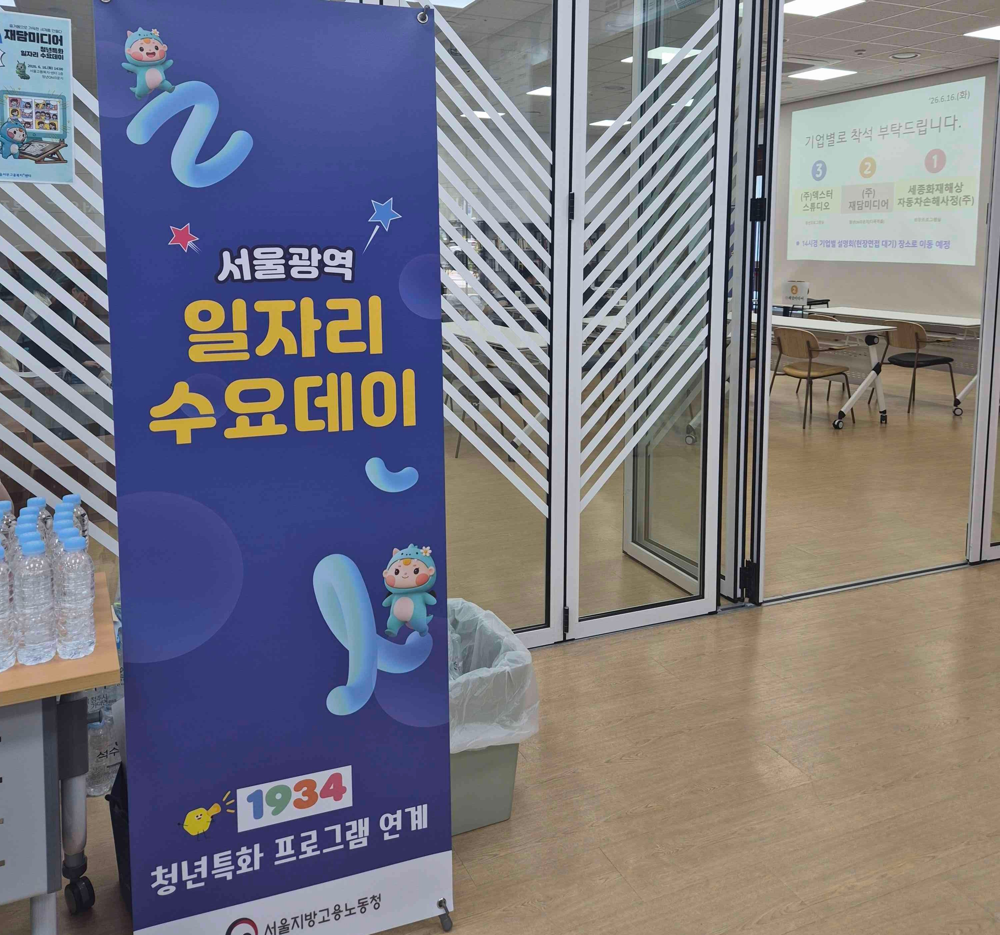
웹툰 PD, 시각디자이너(VFX Compositor), 보험심사원, 마케팅·영업지원 사무원 등 청년들을 위한 다양한 직종의 채용절차가 현장에서 바로 이어지는 만큼 현장의 열기는 그 어느 때보다 높았습니다. 이와 함께 참여 기업들에게는 채용연계시 지원 받을 수 있는 '2026년 지역맞춤형 고용촉진장려금 사업' 홍보를, 구직청년들에게는 사전 기업 채용설명회를 실시하고, 맞춤형 취업 지원 프로그램까지 안내하며 구직자와 기업 모두의 가려운 곳을 시원하게 해소해주는 현장이었습니다. 막막했던 취업 준비에 확실한 방향까지 제시하며, 청년들에게 "나도 할 수 있다!"는 자신감을 단단히 충전해 준 뜻깊은 시간이었습니다.
* 참여기업: 세종화재해상자동차손해사정(주), 주식회사대하에프앤씨, (주)비에스아이티, 주식회사 덱스터스튜디오, (주)재담미디어
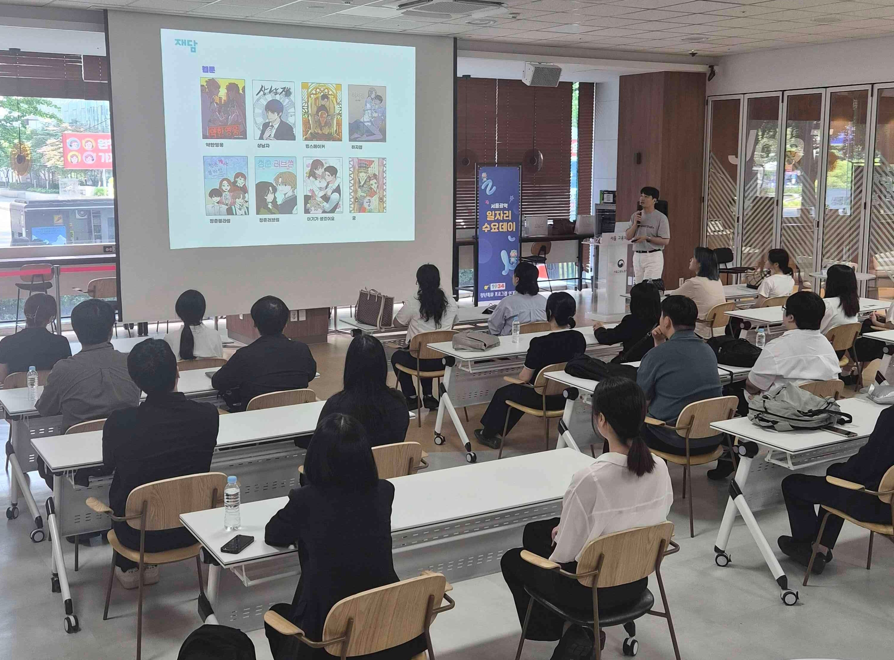
웹툰 PD를 꿈꾸는 청년들을 위한 (주)재담미디어 기업설명회
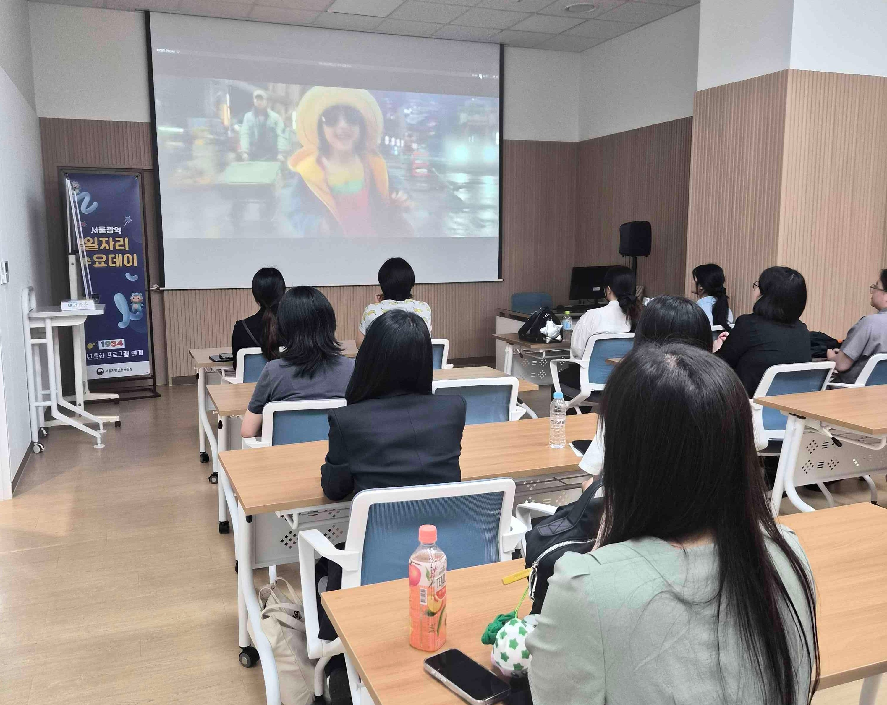
스크린 속 마법을 그리는 주식회사덱스터스튜디오의 기업 설명회
면접 부스 너머 구직자 & 면접관 밀착 토크
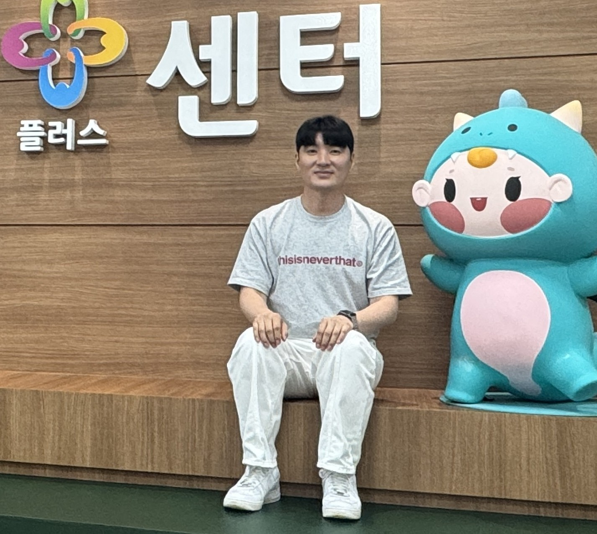
"웹툰을 넘어 전 세계를 사로잡을 강력한 IP 크리에이터'를 찾습니다!"
Q. 오늘 수요데이 현장 면접 분위기는 어땠나요?
"당초 예상했던 20명을 훌쩍 넘어, 현장 추가 접수까지 더해 총 38명의 면접을 진행했습니다. 청년구직자들의 뜨거운열정에 진심으로 놀랐습니다. 한정된 시간 때문에 모든 이야기를 다귀담아 듣지 못해 아쉬울 따름입니다."
Q. 면접관의 마음을 사로잡은 '치트키' 역량이 있다면 무엇일까요?
"웹툰 PD는 절대 혼자 일하지 않습니다. 수많은 창작자, 유관 부서와 끊임없이 협업하는 일이죠. Forensic, QC 등 타부서와의 면밀한 조율 능력도 중요하며, 그래서 이번 면접에서는 지원자의 '협동심'과 '소통 능력'을 가장 눈여겨봤습니다."
Q. 웹툰 PD를 꿈꾸는 청년들을 위한 꿀팁이 있을까요?
"트렌드 적응력 and 웹툰을 하나의 가치 있는 'IP(지식재산권)'로 바라보는 넓은 시야가 필요합니다. 특히 포토샵이나 클립 스튜디오 같은 실무 툴은 '입사해서 배우겠다'가 아니라 미리 마스터하고 지원세요! 실무 무기를 먼저 장착하고 꾸준히 도전한다면 취업의 문턱은 생각보다 훨씬 낮아질 거예요. 웹툰 PD를 꿈꾸는 모든 취준생들 화이팅입니다!"
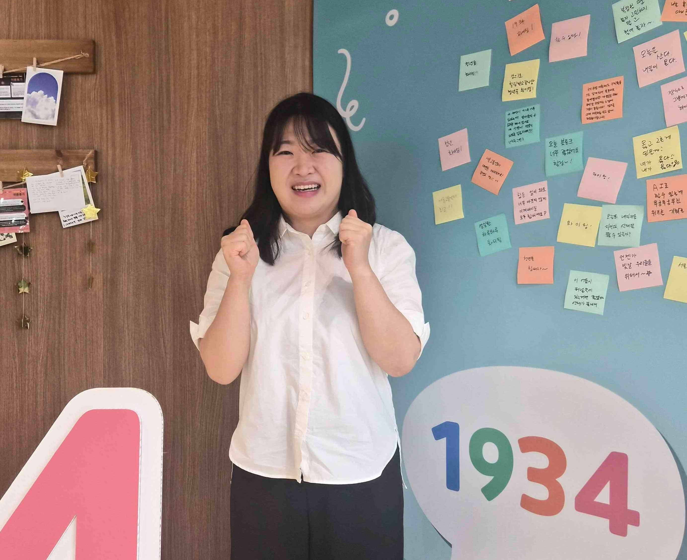
"자동차 전공자에서 웹툰PD 지망생으로, 제 인생 첫 웹툰PD 면접의 설렘을 이곳에서!"
Q. 전혀 다른 전공에서 웹툰 PD에 도전하게 된 계기가 궁금해요!
"원래 전공은 자동차 관련인데, 긴 공백기 동안 '진짜 좋아하는 일'을 고민했어요. 평소 웹툰 앱을 달고 살았던 경험과 과거 PM 근무 경력을 살려 지금은 훈련기관에서 웹툰 PD 과정을 수강하며 웹툰PD를 꿈꾸고 있습니다."
Q. 오늘 첫 면접을 마친 소감이 어떤가요?
"웹툰PD 관련 첫 면접이라 무척 떨렸지만, 현직자로부터 생생한 조언을 들으니 무엇을 보완해야 할지 방향이 잡혔습니다. 기업 설명회도 듣고 면접까지 해보니, 앞으로 보완해야 점들이 보이네요. 이런 알짜배기 기회들을 발판 삼아 실전 감각을 꾸준히 쌓아가겠습니다. 물론 오늘 합격하는 게 베스트지만요(웃음)"
'웹툰PD'가 궁금해?
웹툰PD는 기획부터 연재, 홍보까지 웹툰의 모든 순간을 책임지는 사람입니다. 재미있는 이야기를 찾는 안목, 트렌드를 캐치하는 감각, 작가를 잘 관리하는 세심함이 필요합니다.
"이 회사가 왜 좋지? 숨은 강소기업 200% 파헤치기"
풍림무약주식회사
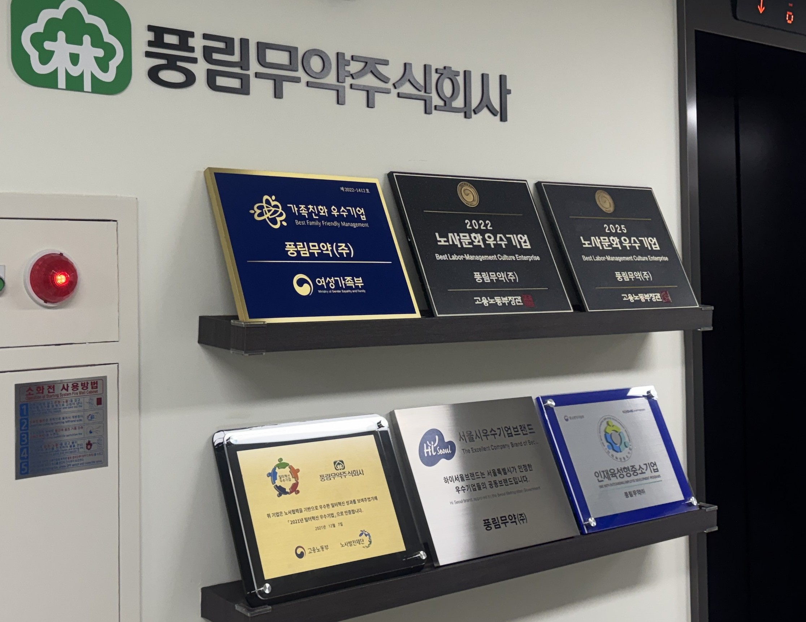
"우리 지역에 이런 알짜 기업이 있었다고?" 서울고용센터가 우수 강소기업을 널리 알리기 위해 야심 차게 준비한 '기업탐방 프로그램'! 지난 5월 28일에 제약·바이오 산업의 숨은 강자, '풍림무약'을 직접 다녀왔습니다. 현직자들과 만나 함께 회사 곳곳을 둘러보며, 채용시장에서 풍림무약을 왜 주목해야 하는지 그 이유를 낱낱이 파헤쳐 봤습니다.
✔ 풍림무약은 어떤 회사인가요?
풍림무약은 원료 유통부터 의약품 개발, 완제품 생산까지 헬스케어 산업 전반의 가치를 잇는 종합 제약 기업입니다. 자체 R&D 중앙연구소를 운영해서 차별화된 제품을 개발하고 있고, KGMP(우수 의약품 제조 기준) 인증을 받은 최첨단 공장에서 직접 생산까지 하고 있으니 기술력은 말할 것도 없겠죠? 신뢰(Trust), 신용(Credit), 상생(Symbiosis), 헌신(Commitment)이라는 네 가지 핵심 가치를 바탕으로 건강한 미래를 만들기 위해 노력하고 있는 회사입니다.
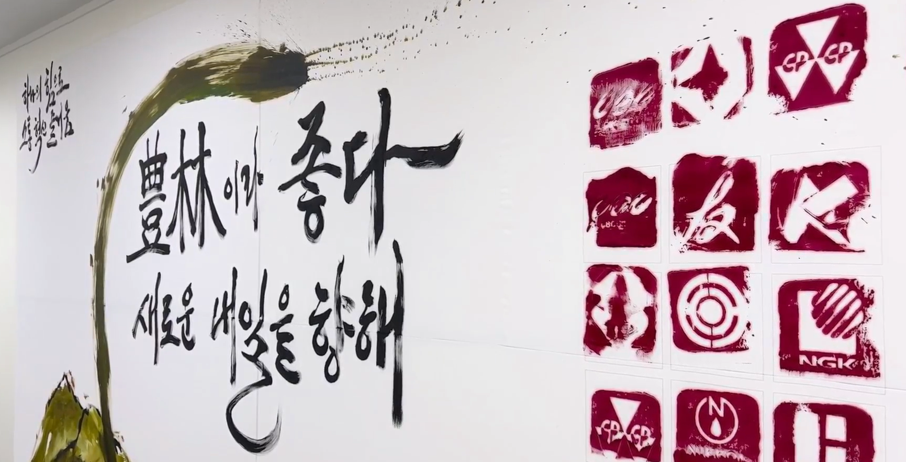
✔ 취준생이 제일 궁금해할 '복지 제도' 소개!
현장에서 확인한 풍림무약의 사내 문화는 정말 '직원 친화적'이었어요. 일과 삶의 균형을 위한 지원이 정말 탄탄하더라고요. 휴식(Refresh)을 위한 휴양시설 지원부터, 직무 역량을 키워주는 맞춤 교육(Training), 임직원 건강을 위한 종합 건강검진(Health), 그리고 경조사 지원(Support)까지 정말 세심하게 신경 쓰고 있었어요. 탄탄한 가족친화제도가 자리잡은 기업이라고 느껴졌습니다.
이런 분이라면 풍림무약의 문을 두드리세요!
✔ 제약·바이오 산업과 원료 트렌드에 관심이 많은 분
✓ 신약, 천연물 기반의 정밀한 R&D 연구를 즐기는 분
✓ 바이오, 헬스케어 혁신으로 건강 증진에 기여하고 싶은 분
📸 취재 및 촬영 ㅣ 청년ON기자단 이주원, 청년인턴 서희선
디스페이스 코리아 (dSPACE)
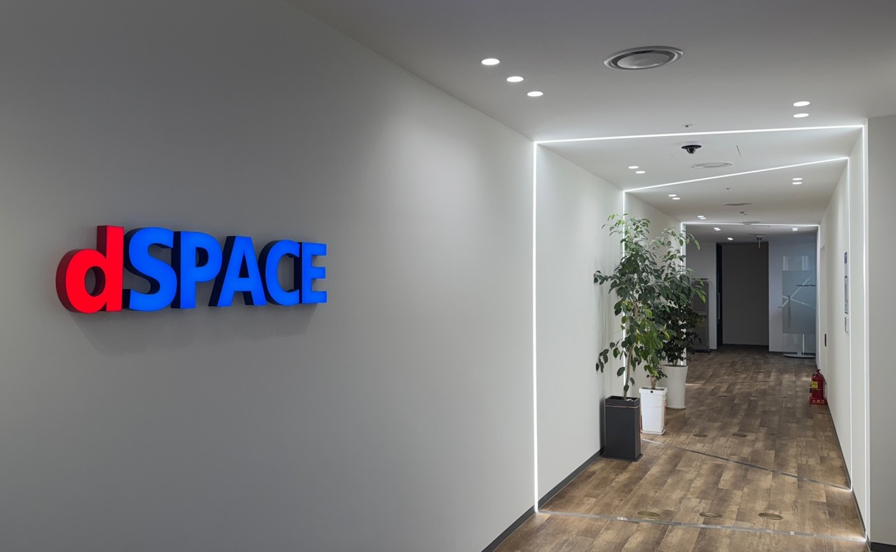
서울고용센터의 기업 탐방 프로그램, 그 두 번째 주인공은 자율주행차와 전기차 등 미래 모빌리티 개발을 위한 시뮬레이션 및 검증 솔루션 분야의 글로벌 리더, '디스페이스 코리아'입니다. 서희선 청년인턴과 최하늘 청년인턴이 지난 5월 29일 이곳을 탐방하고 온 후기를 지금부터 소상히 들려드립니다!
✔ 디스페이스 is 어떤 회사인가요?
디스페이스는 35년이라는 긴 역사를 자랑하는 기업으로, 고객사가 무려 현대, 삼성, BMW, 포르쉐 등이었답니다..! 전 세계 5만개 이상의 시스템을 공급하고 있고, 자율주행·전기차 시뮬레이션 검증 솔루션 부문에서는 글로벌 1위라는 점! 놀랍지 않나요?
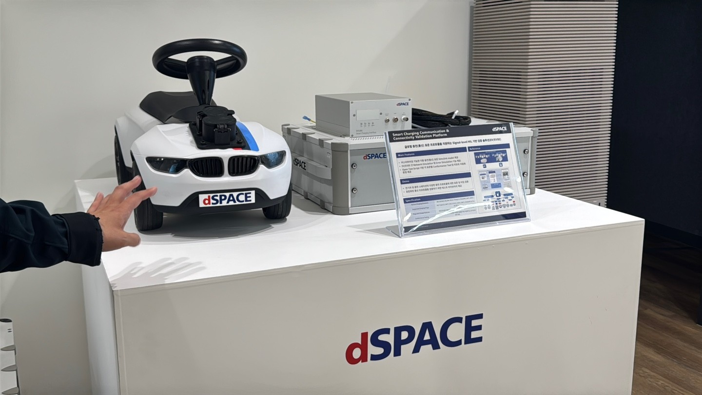
✔ 취준생이 제일 궁금해할 '복지 제도' 소개!
무엇보다 인상 깊었던 점은 바로 수평적이고 자유로운 사내 문화였답니다. 실제로 이곳은 이직률이 5% 미만일 정도로 직원들이 일하기 좋은 환경을 갖추고 있었어요. 직무와 영어 교육 같은 성장을 돕는 프로그램부터 복지카드, 건강검진, 피트니스비용 지원까지 임직원의 삶을 세심하게 챙기고 있었어요. 키덜트 동호회부터 다양한 사내 동호회들도 활발히 운영되고 있어 직원들이 더욱 즐겁게 회사를 다닐 수 있다고 합니다. 또한 매년 개최하는 '디스페이스 코리아 유저 컨퍼런스(KUC)'는 업계 종사자 700여 명이 참석할 정도로 큰 행사인데, 다양한 최신 기술과 자동차 시장의 트렌드를 파악할 수 있다고 하니, 관심있는 청년들은 찾아보면 많이 도움될 겁니다.
이런 분이라면 디스페이스 코리아의 문을 두드리세요!
✔ 글로벌 기업 문화 속에서 미래 모빌리티 기술을 선도하고 싶은 열정인재
✓ 시뮬레이션 기반의 정밀한 엔지니어링에 관심이 깊으신 분
📸 취재 및 촬영 ㅣ 청년인턴 서희선, 청년인턴 최하늘
취업의 전 과정을
서울고용센터 청년ON라운지와 함께
막막하기만 했던 취준 생활, 어떻게 하면 반전시킬 수 있을까요? 서울고용센터 프로그램을 200% 활용해 원하는 회사에 당당히 합격한 오O정님의 이야기, 지금 바로 만나보세요!
오O정 합격자 (만 25세)
합격 회사 및 직무: SK 하이닉스 기반기술 최종 합격!
• 참여 프로그램: 1:1 취업컨설팅 7회, 모의면접 프로그램
• 학습 공간: 서울고용센터 청년ON라운지 스터디존
"감사합니다! 꾸준히 이 곳에 와서 1:1 컨설팅도 받고, 프로그램도 참여한 게 정말 큰 도움이 되었어요. 컨설팅 때 받은 조언들이 정말 큰 도움이 됐고, 소속감 없이 심리적으로 지쳐갈 때마다 규칙적으로 센터에 나오는 것만으로도 마음을 다잡을 수 있었어요. 거기다 상담 전후로 옆에 있는 스터디공간을 편하게 쓸 수 있었던 것도 합격까지 페이스를 유지하는 데 생각보다 큰 힘이 됐습니다. 그리고 모의면접데이 프로그램에 참여한 것도 좋은 경험이 되었어요. 말하자면, 취업을 위한 입사지원서 컨설팅과 면접연습부터 셀프 학습까지 모든 과정을 청년ON라운지에서 해냈던 거죠."
"요즘은 생성형 AI가 자소서 글을 잘 써주긴 하지만, 가장 중요한 건 나만의 기준을 찾아나가는 일이었어요. 일단 많이 써보는 게 중요했고, 컨설턴트 선생님과 머리를 맞대고 여러번 고치는 과정을 거치면서 어떤 글이 좋은글인지 캐치할 수 있는 능력을 갖게 되면서 자소서 퀄리티가 확 높아졌어요."
"컨설팅은 주로 신영단 컨설턴트님과 진행했는데, 제 고민을 흘려듣지 않고 함께 깊이 고민해주셔서 정말 감사했어요. 그리고 모의면접데이 때 현직자 면접관과 컨설턴트 분들께 새로운 시각의 피드백을 받은 것도 두고두고 도움이 됐는데, 이런 프로그램을 만들어 주신 서울고용센터에도 감사하다는 말씀 전하고 싶어요."
"'취준생이니까 쉬면 안 돼'라고 스스로를 너무 몰아붙이지 않았으면 해요. 마음의 여유를 두고 취미활동도 병행해 보세요. 취준 기간에만 누릴 수 있는 소소한 시간들도 분명 있거든요. 서울고용센터의 다양한 프로그램들도 적극적으로 활용해 보면서, 우리 모두 조금만 더 힘내서 파이팅해요!"
놓치면 아쉬운, 알찬 프로그램들이
계속해서 여러분을 기다리고 있습니다.
취업준비콘서트 일자리톡톡
한화생명
취업준비콘서트 일자리톡톡
주택도시보증공사
취업준비콘서트 일자리톡톡
기업은행
취업준비콘서트 일자리톡톡
한국관광공사
경험에서
진가(진단-가치)찾기
청년AI HOT스쿨
(포트폴리오편)
모의면접DAY
함께하는 실전 면접 연습!

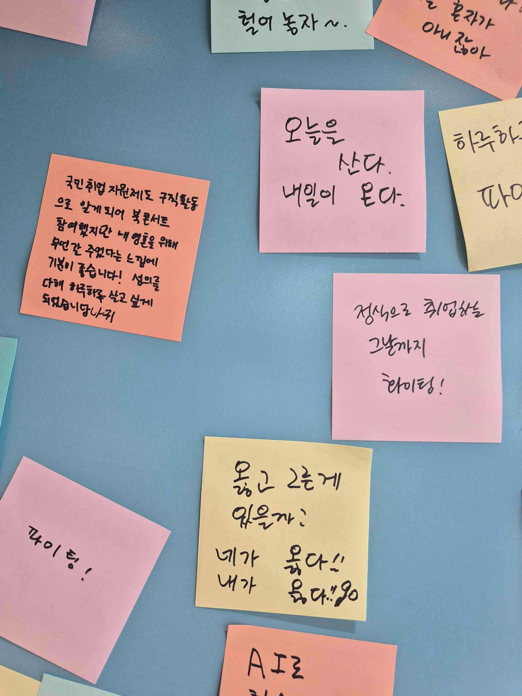
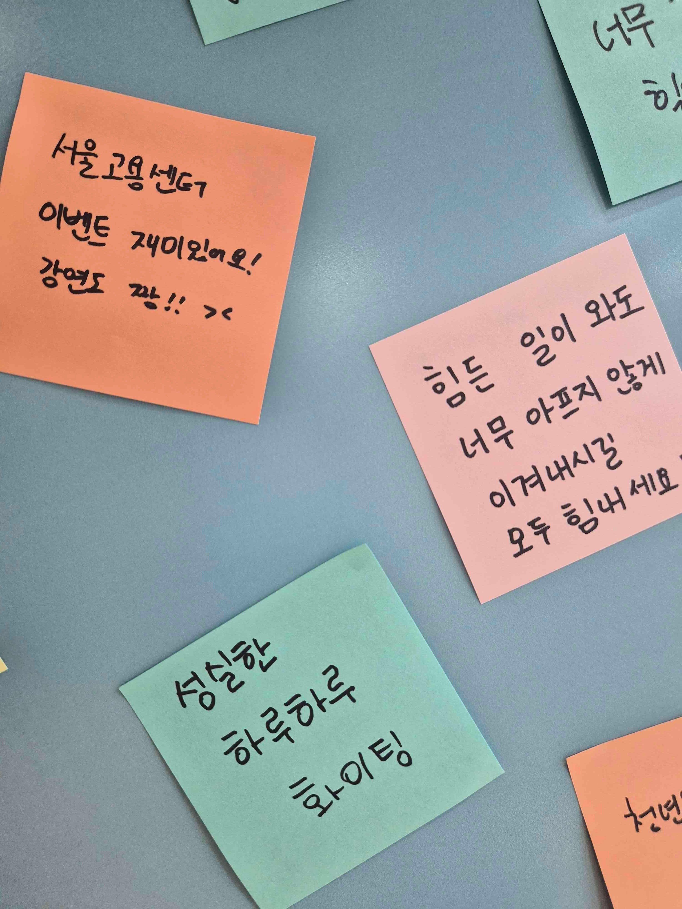
"내 자리가 있을까"
불안해지는 AI 시대라지만, 결국 문제를 발견하고 세상에 온기를 불어넣는 건 언제나 사람의 몫이었습니다. 청년들이 AI라는 거대한 파도에 휩쓸리지 않고, 유능한 도구로 길들일 수 있도록, 서울고용센터는 늘 다양한 프로그램으로 여러분의 곁을 든든하게 지키고 있습니다. 도구를 디딤돌 삼아 자신만의 단단한 뼈대를 세워나가는 그 모든 도전을, 진심으로 응원합니다!